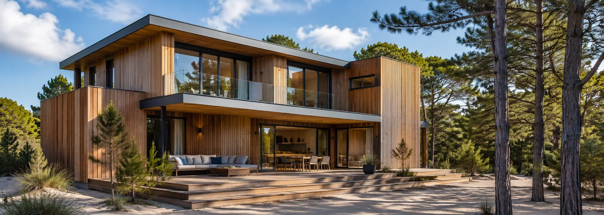
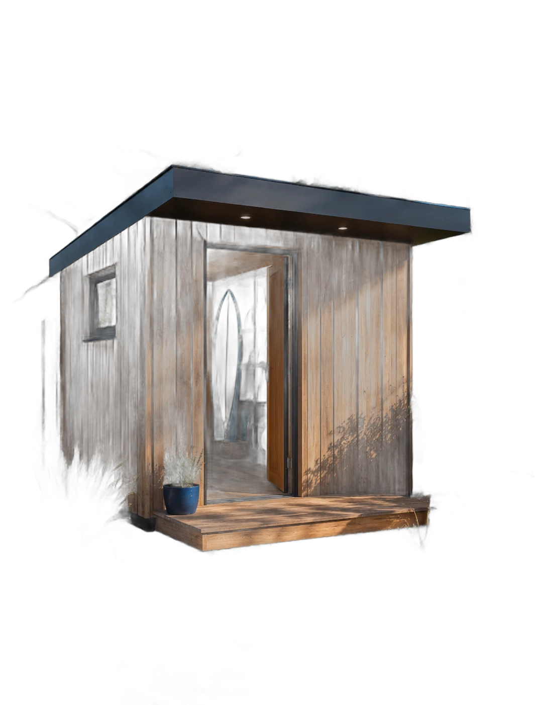
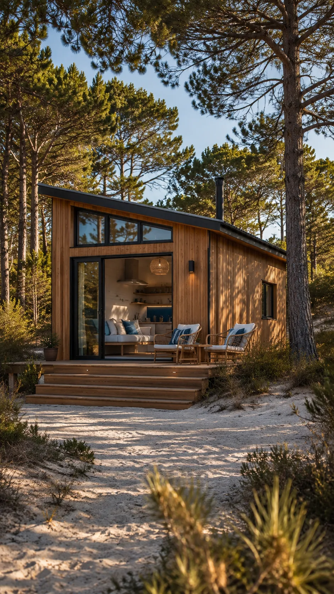
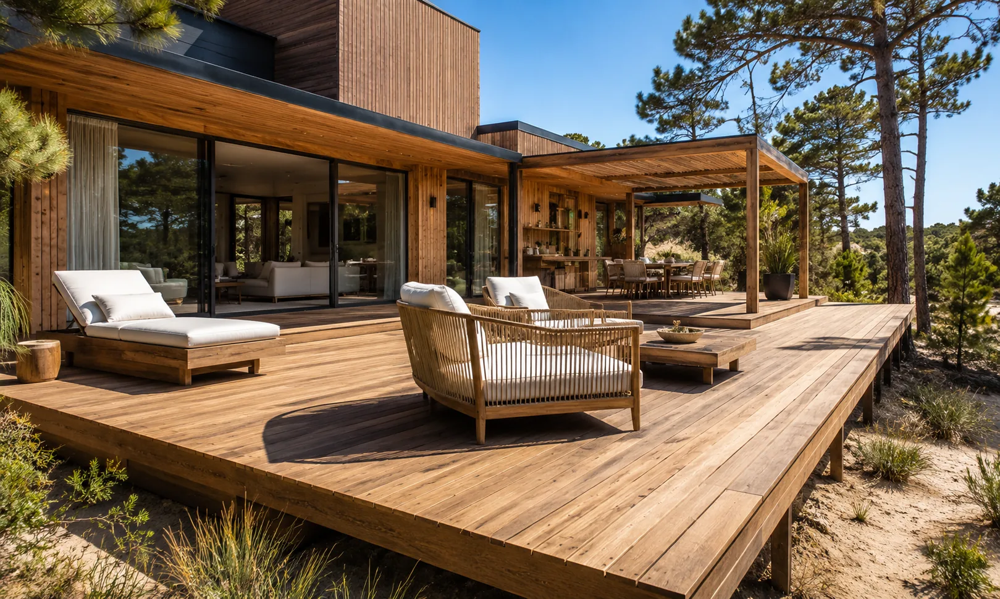
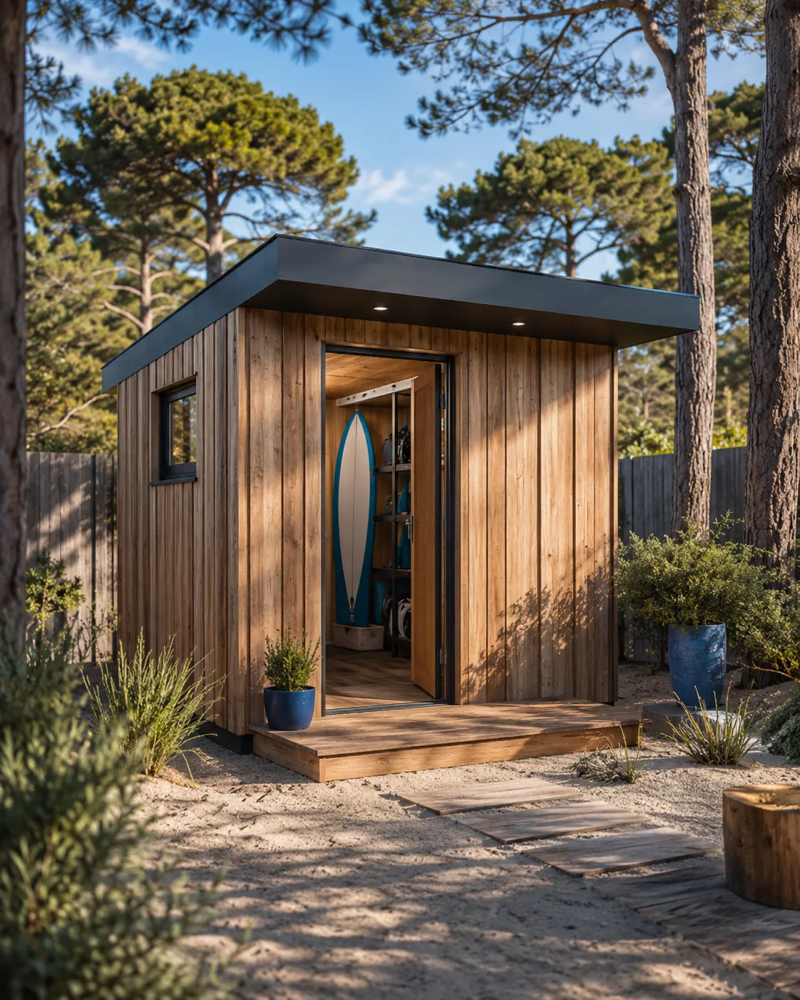
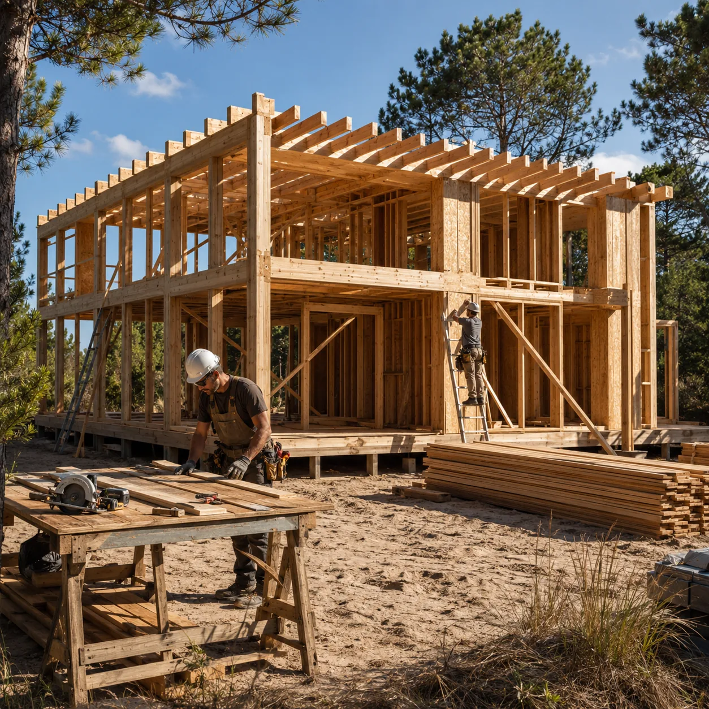

Casas wood frame
Proyecto completo, de la platea a la llave. Diseñadas para el clima y la arena de la costa.
Sistema wood frame · Pinamar
Proyectamos y construimos casas, tiny houses, decks y espacios de guardado con sistema wood frame. Obra seca, plazos cortos y precio cerrado, acá en la costa.


Guardado 3×2 · 30 díasLámina 02 · Qué construimos
Todo en sistema wood frame, con el mismo equipo de principio a fin: proyecto, estructura y terminaciones.
Proyecto completo, de la platea a la llave. Diseñadas para el clima y la arena de la costa.

Vivienda completa en pocos metros: ideal para renta o para tu escapada entre los pinos.

Ampliá tu casa hacia afuera: decks, galerías y pérgolas en madera tratada.

Depósitos a medida: herramientas, tablas, bicis y todo lo tuyo, bajo techo.

Sumá un ambiente sin demoler: la obra seca convive con tu casa habitada.
Lámina 03 · El proceso
Seguí bajando: la estructura se construye con tu scroll, igual que en obra — de la platea a la llave.
Fundación de hormigón armado, nivelada y anclada: la base que separa la madera del suelo.
Montantes y vigas de pino tratado se panelizan en taller y se montan en el lote en días.
Membranas hidrófugas, aislación térmica y placas: la casa queda estanca y eficiente.
Aberturas, instalaciones y terminaciones finales. Te entregamos la llave, lista para habitar.
Lámina 04 · Por qué wood frame
70%
Los paneles se arman en taller mientras la platea fragua. Una casa se habita en meses, no en años.
60%
La cámara aislada del muro wood frame gasta menos en calefacción y aire, todo el año.
90%
Obra seca: sin mezcla, sin demoliciones y sin volquetes eternos estacionados en tu lote.
100%
Pino tratado en autoclave, preparado para la humedad y la salinidad de la costa atlántica.
Lámina 05 · Obras
Arrastrá la vidriera: cada obra tiene nombre, zona y metros reales de la costa atlántica.
Lámina 06 · Opiniones
«Nos entregaron la casa en cinco meses, con el precio que firmamos el primer día. Todavía no lo podemos creer.»
«El deck nos cambió la casa: en tres semanas estábamos comiendo afuera, sin escombros ni obra eterna.»
«Alquilamos la tiny todo el año. La aislación es tan buena que en invierno alcanza con un split.»
Lámina 07 · Preguntas
Si tu duda no está acá, escribinos por WhatsApp y te la respondemos en el día.
Sí. Usamos madera tratada, membranas hidrófugas y cámaras ventiladas pensadas para la humedad y la salinidad del mar. Es el sistema estándar en las costas de Estados Unidos y el norte de Europa hace más de un siglo.
Un espacio de guardado o un deck se entrega en semanas. Una tiny house, en unos 3 meses. Una casa completa, entre 4 y 8 meses según superficie y terminaciones.
El costo por metro cuadrado es comparable, pero el wood frame gana por plazos más cortos, menos desperdicio y mejor eficiencia térmica. Además firmamos precio cerrado por contrato.
Sí. El sistema es modular y de obra seca: se puede sumar un ambiente, un quincho o un piso conviviendo con la casa habitada, sin demoler nada.
Nos ocupamos de todo: proyecto, cálculo estructural, dirección de obra y gestión municipal en Pinamar y los partidos de la zona.
Lámina 08 · Contacto y zona
Cariló, Valeria del Mar, Ostende, Villa Gesell, Costa Esmeralda y General Madariaga. Vamos a tu lote, lo relevamos y te pasamos una propuesta con plazos y precio cerrado.
Base de operaciones: Pinamar, Buenos Aires
Última lámina · Tu proyecto
Te respondemos en el día con una primera estimación de plazos y presupuesto. Sin compromiso y sin vueltas.
Escribinos por WhatsApp